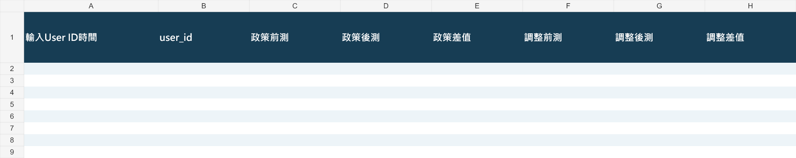
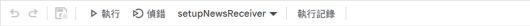
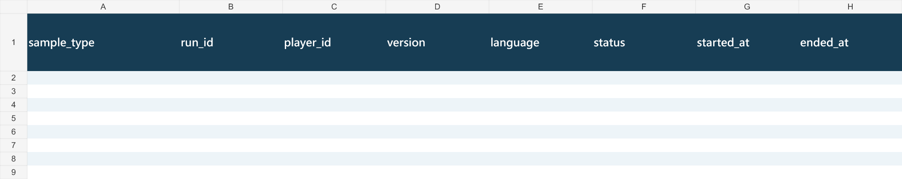
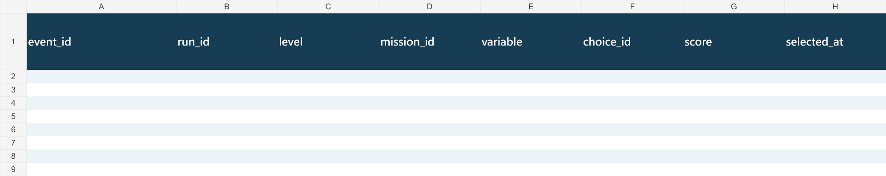
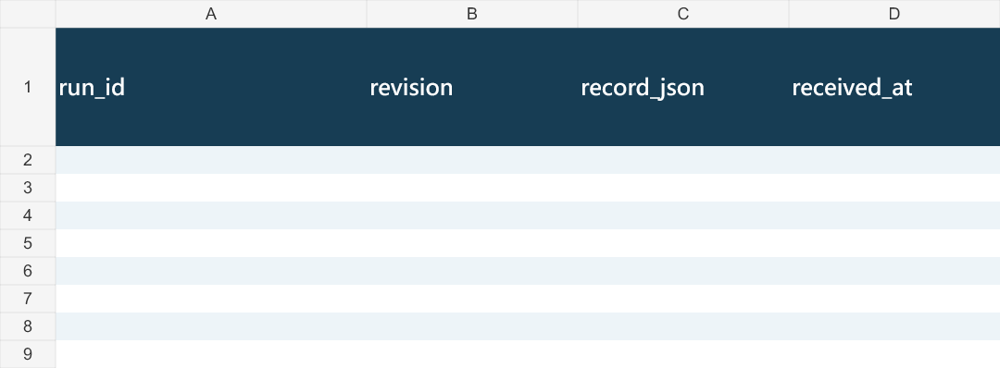
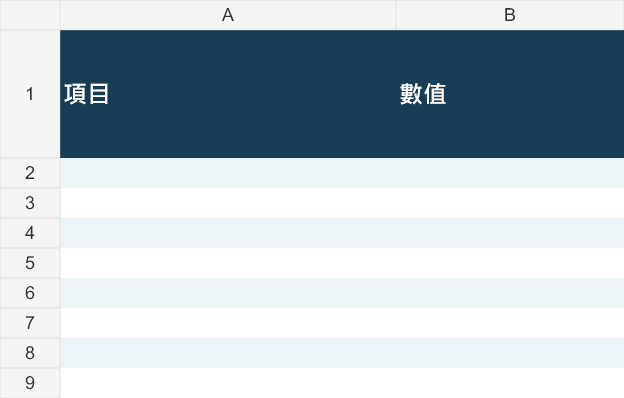

Google Sheets 與 GAS 設定圖解
文件版本 1.4 · 2026-11-09 · 適用新專案
下載空白範本 .xlsx 下載 GAS 範本 複製完整 GAS
下載檔是可匯入 Google Sheets 的 XLSX 空白範本，沒有玩家資料。公式由 GAS 初始化安裝，下載當下尚未計算。現有網站與正式研究表格未因本文件變更。
| 工作表 | 欄位／用途 |
|---|
| 前後測資料 | 22 欄；輸入時間 → user_id → 政策、調整、整體前後測與差值 → 完成時間與總秒數。 |
| 遊玩資料 | 34 欄；原始分數與計算欄位。reserved 欄保留相容位置，非研究變數。 |
| 操作紀錄 | 12 欄；決策與事件紀錄。 |
| 同步紀錄 | 4 欄；run_id、revision、record_json、received_at。 |
| 整體摘要 | 2 欄；初始化後計算納入人數、前測與後測平均、差值及總時間平均。 |
1. 下載並匯入 Google Sheets
下載下方 XLSX，至新的 Google 試算表選「檔案 → 匯入 → 上傳」，選擇建立新的試算表。若從 Drive 直接開啟 XLSX，先以「檔案 → 另存為 Google 試算表」轉換。不要覆蓋正式研究表格。

範本格式預覽：前後測資料 A–H。完整檔案含 A–V 共 22 欄。 點圖可看原尺寸。
2. 貼入 GAS 程式並儲存
在新試算表選「擴充功能 → Apps Script」，刪除預設 myFunction，貼上完整 NewsReceiver.template.gs，儲存。只貼這一份，勿與舊版 NewsReceiver.gs 混用。

實際 GAS 編輯器工具列局部截圖。圖中舊專案函式名稱僅示範選單位置；新範本要選 setupNewResearchWorkbook。 點圖可看原尺寸。
3. 設定指令碼屬性
左側齒輪「專案設定」→「指令碼屬性」→「新增／編輯指令碼屬性」。新增 SHEET_ID，值為你新試算表網址 /d/ 與 /edit 間的 ID。NEWS_SHARED_SECRET 初始化時自動產生；只在私人後端設定保存。
實際 GAS 設定頁局部截圖。裁切只保留屬性名稱與編輯按鈕，不顯示任何屬性值。 點圖可看原尺寸。
4. 初始化五張工作表
回編輯器，在函式下拉選 setupNewResearchWorkbook，按「執行」，由帳號擁有者完成 Google 授權。初始化只接受空白表，或本下載檔那樣只有精確欄名的工作表；已有研究資料會停止。成功後前後測資料置於第一張，A2 安裝 ARRAYFORMULA，摘要出現計算列。不要手動改寫主表公式或原始欄位順序。
5. 新增網頁應用程式部署
右上「部署 → 新增部署作業」，類型選「網頁應用程式」，填入版本說明。
實際 GAS 新增部署對話框，未提交變更。 點圖可看原尺寸。
6. 設定執行身分與存取範圍
執行身分選「我」，誰可以存取選「所有人」，再按部署。若組織政策不允許所有人，先請管理員確認。試算表本身維持私人；接收器會檢查密鑰。複製部署後以 /exec 結尾的網址，勿使用 /dev 或專案編輯網址。
實際 GAS 存取設定與部署按鈕局部截圖；含帳號的執行身分列未納入圖片。 點圖可看原尺寸。
7. 連接網站後端
在 Cloudflare 私人 Secrets 設 NEWS_SHEETS_URL＝部署的 /exec 網址；NEWS_SHEETS_SECRET＝GAS 的 NEWS_SHARED_SECRET。重新部署網站讓設定生效。不要將這些值貼進 GitHub、公開 HTML 或前端 JavaScript。Sites 版本需在自己的私人後端環境另行設定。
8. 驗收記錄與公式
使用測試 ID 完整玩三關，確認遊玩資料 1 列、操作紀錄 9 筆、同步紀錄 1 列，主表顯示輸入時間、完成時間、總秒數及分數。把測試的 sample_type 改為「測試」，摘要應排除。用同一 run_id 重試不應重複新增；大小寫相同的 ID 應拒絕；中途退出不應上傳研究記錄。
計算方式與驗收例子
政策與調整各自：前測＝珊瑚得分 × 100；後測＝（海草得分＋風電得分）÷ 2 × 100；差值＝後測－前測。每次選擇得分為 0 或 1。整體前後測取兩變數平均。
例如兩變數皆為珊瑚 0、海草 1、風電 1：整體前測 0、後測 100、差值 +100 百分點。完成時間－輸入 User ID 時間＝總秒數。跨關情境不同，分數差值是遊戲內表現變化，不能單憑差值宣稱因果學習效果。
本次已驗證範本欄位、空白狀態與 GAS 模擬初始化／防覆寫；尚未將此下載範本匯入新的 Google 試算表做實機驗收。請依第 8 步驗收後再收集正式資料。
其他工作表格式預覽

第 2 張工作表的開頭欄位。完整欄位在下載檔內。
第 3 張工作表的開頭欄位。完整欄位在下載檔內。
第 4 張工作表的開頭欄位。完整欄位在下載檔內。
第 5 張工作表的開頭欄位。完整欄位在下載檔內。返回完整 Prompt 與逐條解析 · 完整文字與 GAS 原始碼